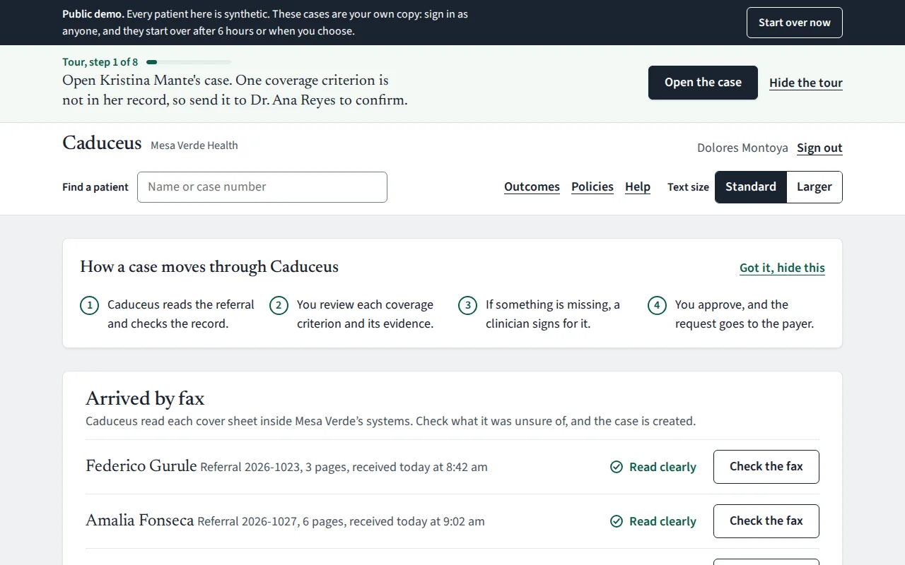
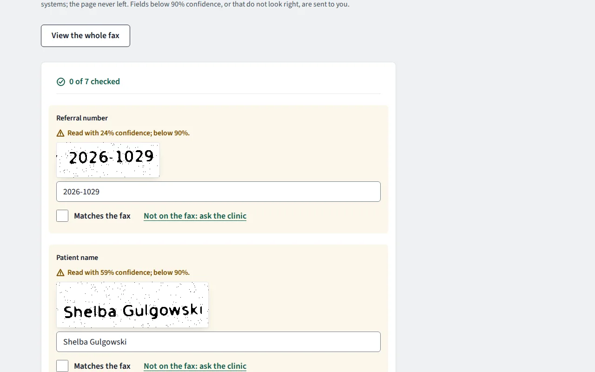
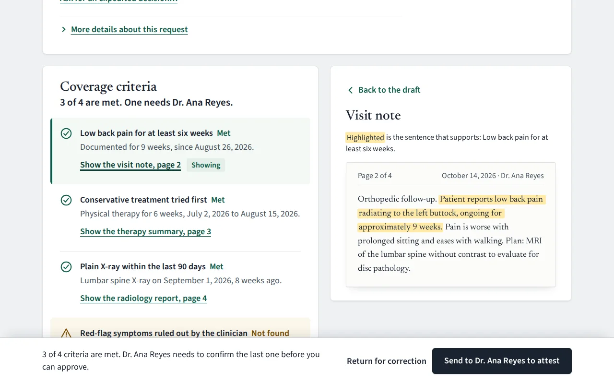
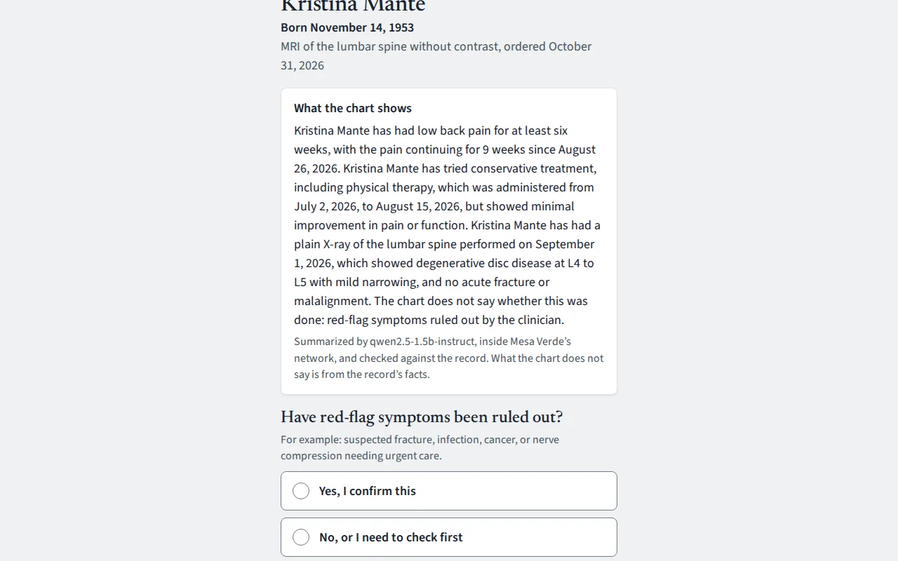
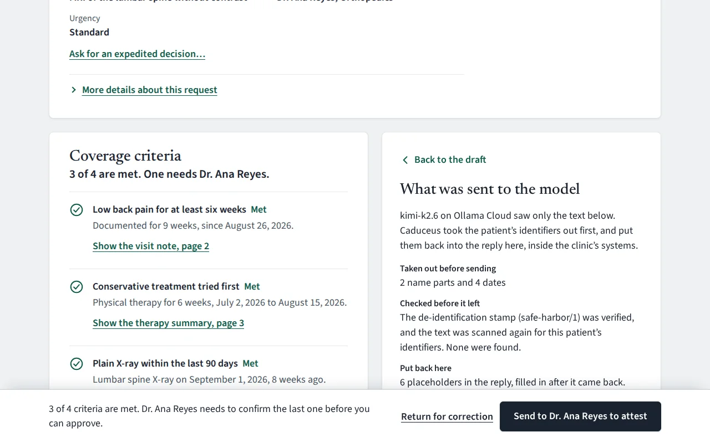
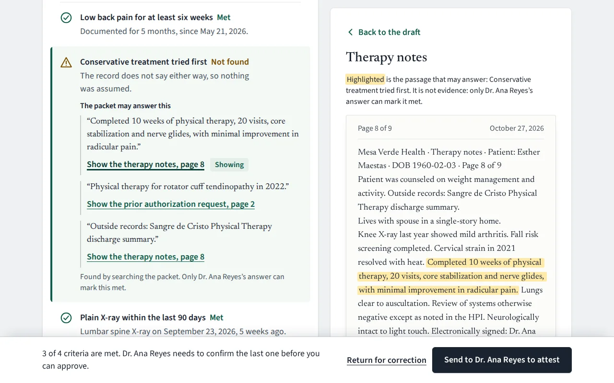
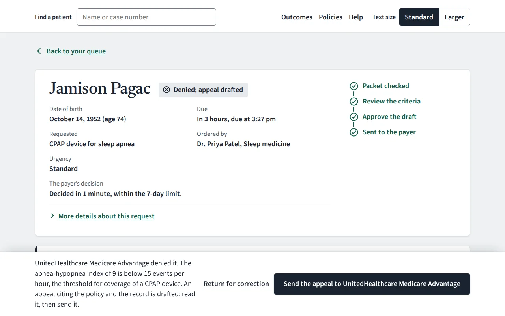
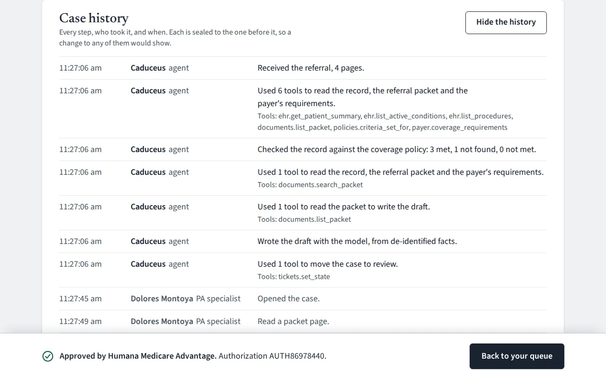

Caduceus
A prior-authorization agent that keeps patient data inside the clinic
Before a medical group can schedule an MRI or a knee replacement, the patient’s insurer has to approve it. Staff read the chart against the insurer’s criteria, chase the doctor for whatever is missing, and send the request by fax or portal. Caduceus does the reading. It reads the faxed referral, checks the patient’s record against the insurer’s own policy, asks the ordering doctor only what the record can’t answer, and drafts the request. Nothing goes out until a specialist approves it.
The customer, Mesa Verde Health, is a simulated six-clinic group, and every patient is synthetic. The rules are real: the criteria quote Medicare’s policy text, and the requests follow the federal rule that gives insurers 7 days to decide, or 72 hours when it’s urgent, and a specific reason for every denial.
- Built with
- Python, FastAPI, Postgres, React, TypeScript, Tesseract, Docker
- Models
- Qwen2.5-1.5B on llama.cpp inside the network; Kimi K2.6 on de-identified text
- Standards
- FHIR R4, SMART on FHIR, OpenID Connect, CMS-0057-F
- Runs on
- Google Cloud Run and Netlify
What leaves the building
Anything that names a patient stays on a small model inside the clinic’s network. Before text goes out to the model that drafts the request, Caduceus takes the identifiers out, stamps the result so it can’t be swapped on the way, and scans it once more. This is its real de-identifier, run on a synthetic referral.
Inside Mesa Verde’s network
Gilbert Romero, born June 12, 1954, MRN MV-204417, phone (505) 555-0182. Right knee osteoarthritis, Kellgren–Lawrence grade 4 on X-ray. Twelve weeks of physical therapy without relief. Requesting a right total knee replacement.
Read here by Qwen2.5-1.5B, on a CPU beside the app, to summarize the chart.
Sent to the drafting model
[NAME_1], born [DATE_1], MRN [RECORD_NUMBER_1], phone [PHONE_1]. Right knee osteoarthritis, Kellgren–Lawrence grade 4 on X-ray. Twelve weeks of physical therapy without relief. Requesting a right total knee replacement.
- Stamped
- safe-harbor/1, over the text’s SHA-256 6c22f8ad…
- Checked at the edge
- Stamp verified, scanned again, no identifiers left
Across the test suite, 181 identifiers were planted in records and notes. None reached the outside model.
The product

The queue: faxes are read inside the network, then the day’s cases, in plain words. 
Every field the fax reader was unsure of goes to a person, beside the part of the page it came from. 
Every criterion that is met opens the page and highlights the sentence behind it. 
The clinician answers one question, usually on her phone. The chart summary is written inside the network and checked against the record. 
Every draft shows exactly what the model was sent. 
In a nine-page packet, it shows where to look, and never treats that as evidence. 
A denial, with the insurer’s reason, the policy and the record side by side, and an appeal drafted from them. 
Every step, who took it and when, sealed in a hash-chained log.
How it’s checked
| What was measured | Result |
|---|---|
| Patient identifiers that reached the outside model | 0 of 181 planted |
| Attacks that worked: an instruction hidden in a note, a tool called out of turn, a send with no approval, a forged stamp | 0 of 4 |
| Wrong fax fields accepted without a person checking them | 0 of 27 |
| Rules engine on 11 cases built to known answers | 47 of 47 criteria |
| Rules engine on 36 held-out cases with messy records | 88.5%, 4 unsafe errors |
| Chart-summary sentences that said more than the record, caught before anyone saw them | 3 of 4 |
| Accessibility, axe-core against WCAG 2.2 AA | 0 violations on 50 screens |
| Automated tests | 391, and 82 more runs on Postgres |
Every number comes from synthetic data, and none is a claim about real patients.
The number that went down
On cases built to known answers, the rules engine was right every time. That was the easy test. So I generated 36 cases it had never seen, with the mess real charts have: diagnoses entered in error, therapy still under way, codes outside the expected lists, arthritis in the other knee. Agreement fell to 88.5%, with 4 unsafe errors, where it called a criterion met when it wasn’t.
I published that number, fixed the engine where it was wrong, and left the last two for a clinical reviewer, because changing approved criteria isn’t the software’s call.